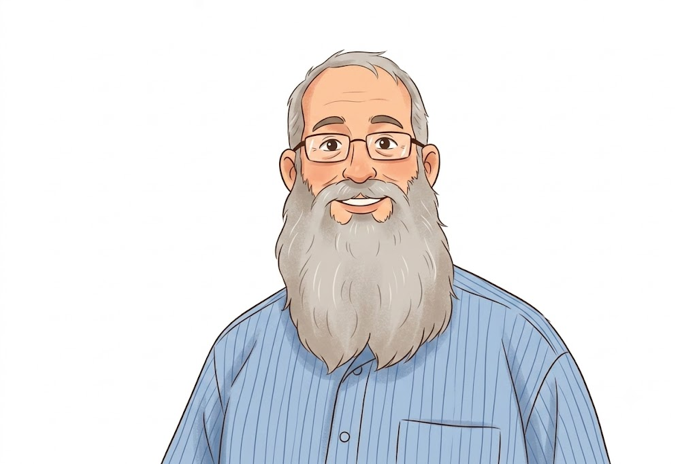

📂 שלב 1 – העלאת קובץ נתונים
📊
גרור קובץ CSV לכאן
ייצוא מ-Google Forms / JotForm / Typeform וכל פלטפורמת סקרים אחרת
🔄 השוואה לסקר קודם
משווה את 4 השאלות המרכזיות (שמוצגות ראשונות) לנתוני סקר 2025
🔎 פילוח לפי
העלאת CSV וצפייה בכל הפילוחים של הסקר במבט אחד
ייצוא מ-Google Forms / JotForm / Typeform וכל פלטפורמת סקרים אחרת
